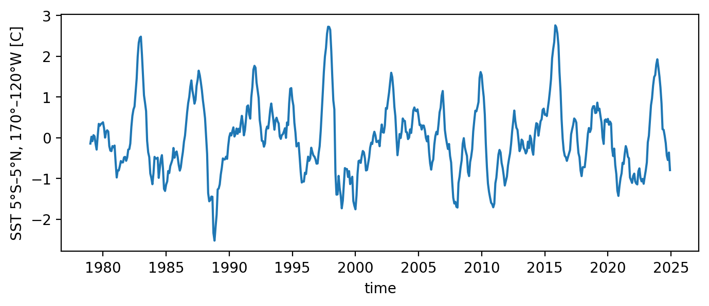
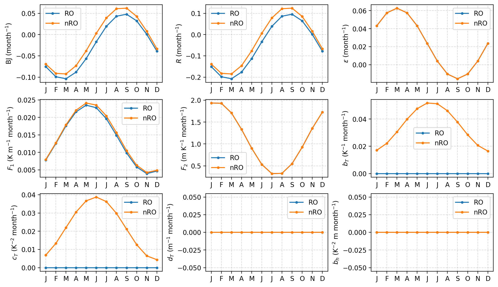
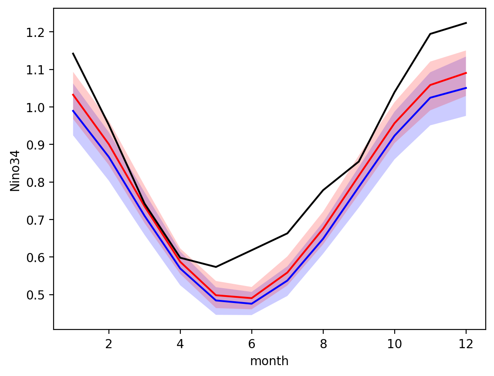

CRO fitting#
This tutorial illustrates how to use the pyCRO to estimate RO parameters from the observation and climate model outputs
Contact:
Sen Zhao (zhaos@hawaii.edu)
[1]:
%config IPCompleter.greedy = True
%matplotlib inline
%config InlineBackend.figure_format='retina'
%load_ext autoreload
%autoreload 2
import os
import sys
import numpy as np
import xarray as xr
import matplotlib.pyplot as plt
sys.path.append(os.path.abspath("../../"))
import pyCRO
from pyCRO import RO_fitting, RO_solver, RO_analytic_std, RO_analytic_solver, RO_BWJ, func_mon_std, par_load
Fitting to the observation/reanalysis#
Load observation ENSO timeseries#
[2]:
# load observations
file_name = os.path.join(os.getcwd(), "../../data", "XRO_indices_oras5.nc")
xr_ds = xr.open_dataset(file_name)
T_oras5 = xr_ds['Nino34'][:] # Nino 3.4 since 1979-01-01
h_oras5 = xr_ds['WWV'][:] # WWV since 1979-01-01
time_oras5 = xr_ds['time'][:] # Days since 1979-01-01
T_oras5.plot(figsize=(8, 3))
h_oras5.plot(figsize=(8, 3))
[2]:
[<matplotlib.lines.Line2D at 0x159b36300>]


Fit with type: linear RO with white addtive noise#
[14]:
# setting fitting options and print the fitted parameters
par_option_T = {"R": 3, "F1": 3, "b_T": 0, "c_T": 0, "d_T": 0}
par_option_h = {"F2": 3, "epsilon": 3, "b_h": 0}
par_option_noise = {"T": "white", "h": "white", "T_type": "additive"}
par_fitted_obs = RO_fitting(T_oras5, h_oras5, par_option_T, par_option_h, par_option_noise)
print(par_fitted_obs)
---------------------------------------------------------------------------------
Welcome to CRO Fitting! Your fitting setups:
---------------------------------------------------------------------------------
- Data time step is not given, defaulting to: dt = 1.0 months.
- Time series length: N = len(T)*dt = 552.0 months.
- Prescribed terms: {'R': 3, 'F1': 3, 'b_T': 0, 'c_T': 0, 'd_T': 0}.
{'F2': 3, 'epsilon': 3, 'b_h': 0}.
0 - Do not prescribe.
1 - Prescribe only the annual mean.
3 - Prescribe the annual mean and annual seasonality.
5 - Prescribe the annual mean, annual seasonality, and semi-annual seasonality.
- Noise options: {'T': 'white', 'h': 'white', 'T_type': 'additive'}.
- Fitting method for T and h main equations: None.
Referring to table_default_fitting_method.txt and using LR-F
---------------------------------------------------------------------------------
All steps are successfully completed!
---------------------------------------------------------------------------------
{'R': [-0.05593351982606123, 0.15313660361276363, -2.737173916414297], 'F1': [0.013718888027663807, 0.009846162690394499, -0.9042975099904762], 'F2': [1.1291210149159407, 0.8323142760801497, 1.061471770708532], 'epsilon': [0.023584768568800617, 0.03920999829130576, 0.2619998710028356], 'b_T': [], 'c_T': [], 'd_T': [], 'b_h': [], 'sigma_T': [0.2010388126198346], 'sigma_h': [1.5036959788770163], 'B': [], 'm_T': [], 'm_h': [], 'n_T': [1], 'n_h': [1], 'n_g': [2]}
[59]:
# setting fitting options and print the fitted parameters
par_option_T = {"R": 3, "F1": 3, "b_T": 3, "c_T": 3, "d_T": 0}
par_option_h = {"F2": 3, "epsilon": 3, "b_h": 0}
par_option_noise = {"T": "white", "h": "white", "T_type": "additive"}
par_fitted_obs2 = RO_fitting(T_oras5, h_oras5, par_option_T, par_option_h, par_option_noise)
print(par_fitted_obs2)
---------------------------------------------------------------------------------
Welcome to CRO Fitting! Your fitting setups:
---------------------------------------------------------------------------------
- Data time step is not given, defaulting to: dt = 1.0 months.
- Time series length: N = len(T)*dt = 552.0 months.
- Prescribed terms: {'R': 3, 'F1': 3, 'b_T': 3, 'c_T': 3, 'd_T': 0}.
{'F2': 3, 'epsilon': 3, 'b_h': 0}.
0 - Do not prescribe.
1 - Prescribe only the annual mean.
3 - Prescribe the annual mean and annual seasonality.
5 - Prescribe the annual mean, annual seasonality, and semi-annual seasonality.
- Noise options: {'T': 'white', 'h': 'white', 'T_type': 'additive'}.
- Fitting method for T and h main equations: None.
Referring to table_default_fitting_method.txt and using LR-F
---------------------------------------------------------------------------------
All steps are successfully completed!
---------------------------------------------------------------------------------
{'R': [-0.030333312058206326, 0.15864938964268652, -2.6503637865357224], 'F1': [0.014196331629457982, 0.010030549722036016, -0.9318052417514915], 'F2': [1.1291210149159407, 0.8323142760801497, 1.061471770708532], 'epsilon': [0.023584768568800617, 0.03920999829130576, 0.2619998710028356], 'b_T': [0.034141753296213245, 0.017958738013933002, -1.5106111738775443], 'c_T': [0.021565714359833604, 0.01720038816962285, -1.2846243221752411], 'd_T': [], 'b_h': [], 'sigma_T': [0.1990054995634122], 'sigma_h': [1.5036959788770163], 'B': [], 'm_T': [], 'm_h': [], 'n_T': [1], 'n_h': [1], 'n_g': [2]}
[60]:
axes = pyCRO.plot_RO_par(par_fitted_obs, label='RO', ncol=3)
axes = pyCRO.plot_RO_par(par_fitted_obs2, label='nRO', ncol=3, ax=axes)

[53]:
N = 12*200
NE = 100
T_out, h_out, noise_out = RO_solver(par_fitted_obs, IC=[0, 0], N=N, NE=NE, verbose=False)
xtime = xr.date_range('0001-01', periods=N, freq = 'MS', use_cftime=True)
member = np.arange(0, NE, step=1)
T_ds = xr.DataArray(T_out, dims={'time', 'member'}, coords={'time': xtime, 'member': member})
h_ds = xr.DataArray(h_out, dims={'time', 'member'}, coords={'time': xtime, 'member': member})
RO_ds = xr.Dataset({'Nino34': T_ds, 'WWV': h_ds})
[53]:
<xarray.Dataset> Size: 4MB
Dimensions: (time: 2400, member: 100)
Coordinates:
* time (time) object 19kB 0001-01-01 00:00:00 ... 0200-12-01 00:00:00
* member (member) int64 800B 0 1 2 3 4 5 6 7 8 ... 92 93 94 95 96 97 98 99
Data variables:
Nino34 (time, member) float64 2MB 0.0 0.0 0.0 0.0 ... 0.357 2.114 -1.012
WWV (time, member) float64 2MB 0.0 0.0 0.0 0.0 ... -7.696 1.43 -0.7313[61]:
T_out, h_out, noise_out = RO_solver(par_fitted_obs2, IC=[0, 0], N=N, NE=NE, verbose=False)
xtime = xr.date_range('0001-01', periods=N, freq = 'MS', use_cftime=True)
member = np.arange(0, NE, step=1)
T_ds = xr.DataArray(T_out, dims={'time', 'member'}, coords={'time': xtime, 'member': member})
h_ds = xr.DataArray(h_out, dims={'time', 'member'}, coords={'time': xtime, 'member': member})
nRO_ds = xr.Dataset({'Nino34': T_ds, 'WWV': h_ds})
[63]:
RO_SD = RO_ds['Nino34'].groupby('time.month').std('time')
nRO_SD = nRO_ds['Nino34'].groupby('time.month').std('time')
[64]:
RO_SD.mean('member').plot(c='blue')
plt.fill_between(RO_SD.month, RO_SD.quantile(0.1, dim='member'), RO_SD.quantile(0.9, dim='member'), fc='blue', alpha=0.2)
nRO_SD.mean('member').plot(c='red')
plt.fill_between(nRO_SD.month, nRO_SD.quantile(0.1, dim='member'), nRO_SD.quantile(0.9, dim='member'), fc='red', alpha=0.2)
plt.plot(RO_SD.month, T_oras5.groupby('time.month').std('time'), c='k')
[64]:
[<matplotlib.lines.Line2D at 0x1627ca5d0>]

[ ]:
[ ]: